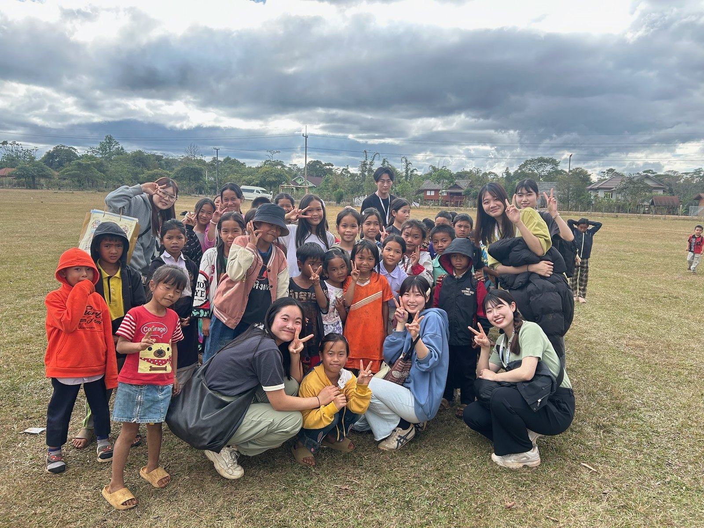

ABOUT US
Smile F LAOSとは
Smile F LAOS（エフラオ）は、ラオスのコーヒーを学生の手で製品化・販売し、その収益をラオスの子どもたちの教育支援へとつなげる 東洋大学発の学生サークルです。コーヒー・教育支援・スタディツアーを通して、「楽しさ」×「学び」 がめぐる循環型の支援モデルに取り組んでいます。

私たちの3つの理念
OUR PRINCIPLES- ラオスのフェアトレードコーヒーの魅力を広める
- 学生ならではの知識を活かした自立を促す教育支援
- ラオスで得た学びをもとにニーズに合った支援を探求し続ける
エフラオの始まり
私たち Smile F LAOS（エフラオ） は、ラオス南部で栽培されるコーヒーを学生の手で製品化・販売し、 その収益を活用した生産地への教育・衛生支援を行う学生団体です。
エフラオの原点は、2013年のラオス・スタディツアー にあります。東洋大学社会学部社会文化システム学科の 箕曲在弘（みのお・ありひろ）准教授の指導のもと、当時の2年生と1年生がラオス南部チャンパサック県に1週間滞在し、 コーヒー農家の暮らしや生産の現場を調査しました。
調査を通じて、学生たちはコーヒー農家の方々の熱意や誇りと同時に、手洗い設備の不足や衛生環境の課題、 子どもたちが手を洗わずに食事をする日常といった現実を目の当たりにしました。 「見て終わりにしたくない。この地域と長く関わり続けたい」という思いから、 2014年4月にSmile F LAOSが立ち上げられました。
創設当初から、現地協同組合のコーヒーをフェアトレードで購買し、学生自身がパッケージデザインや商品企画を行い、 販売で得た収益を浄水器の設置や衛生教育、職業絵本・職業図鑑の制作・寄贈などに充ててきました。
団体名の “F” は “FOR” と “FROM” を掛け合わせたもので、 「ラオスの人びとのために（FOR）」、そして「ラオスの現場から学びをもらう（FROM）」という双方向の関係を大切にしながら、 ラオスと日本の笑顔の架け橋になりたいという思いが込められています。
活動の方向性を考える中で、学生とデザイナー・重森健次郎さんとでロゴも制作しました。 コーヒーの木をモチーフに「子どもの成長」と「エフラオの成長」、そしてラオス国旗の色を取り入れたデザインになっています。
ミッション・ビジョン・価値観を読む
ミッション・ビジョン・大切にしている価値観
Mission（ミッション）
ラオスの子どもたちが、自分の将来の選択肢をあきらめずにいられるよう、 教育の機会と学びの環境を少しずつ整えていくこと。
Vision（ビジョン）
ラオスと日本の若者が、コーヒーや教育をきっかけに出会い、 お互いの暮らしや価値観から学び合いながら、共に未来をつくっていく社会。
そのうえで、エフラオが活動の軸として大切にしている価値観は次の3つです。
- 寄り添った支援：一方的に「してあげる」のではなく、現地の人びとの声に耳を傾け、ともに考えながら形をつくる。
- 進化する支援：一度決めた支援内容に固執せず、スタディツアーでの対話や振り返りを通じて毎年見直していく。
- 楽しさと学び：支援する側・される側という関係ではなく、子どもも学生も「楽しい」「学びがある」と感じられる場をつくる。
コーヒーと教育支援の循環型モデル
エフラオの活動は、「コーヒー」→「販売」→「教育支援」→「スタディツアー」→「次の企画」 という 循環型のモデルになっています。
ラオスの協同組合JCFCとフェアトレードで取引している輸入会社（オルター・トレード・ジャパン）を通じて、 ラオス産コーヒーの生豆を購入します。
国内での焙煎を経て、学生がパッケージや商品コンセプトを考えます。
学内販売会や白山祭、ラオスフェスティバルなどで、コーヒーの背景や支援の仕組みも伝えながら販売します。
売上の一部を使い、毎年12月のスタディツアーの際に、教育支援や支援品の寄贈、ワークショップなどを実施します。 現地での対話や調査をもとに、次年度の企画へとつなげていきます。
フェアトレードや焙煎を支えてくださっている企業・団体については、 「支えてくださっている皆さま」のページで紹介しています。
エフラオの強みとこれまでの実績
エフラオの強み
- 長期的な関係性：2013年から同じ地域・学校と関係を築き、変化を見届けながら支援内容をアップデートしている。
- 学生主体の企画力：コーヒーのパッケージデザインからワークショップの内容まで、学生が主体となって試行錯誤している。
- 現地の声に基づく支援：スタディツアーでのヒアリングや家計調査、先生・保護者との対話を通じて、ニーズを確かめながら支援を考えている。
- 「楽しさ」と「学び」の両立：子どもたちが楽しめるワークや遊びを取り入れつつ、将来や仕事について考えるきっかけもつくっている。
これまでの主な取り組み
- ラオスの小学校への浄水器設置、衛生教育の実施
- 職業絵本・職業図鑑の制作と寄贈、職業ワークショップの実施
- 複数の村での家計調査・インタビューを通じた「暮らし」の聞き取り
- クラウドファンディングに挑戦し、教育支援プロジェクトの拡充につなげた（2024年度）
年度ごとの詳しい活動は、「エフラオの歩み（History）」ページにまとめています。
2026年度・13期の活動
2026年度は、春から秋にかけて3回の学内販売会を開催し、いずれも完売しました。新入生を迎え、各班での活動や合宿を通して、販売と教育支援の両方に取り組んでいます。
教育支援では、食育・衛生・環境をテーマにしたテキストブックを制作しています。10月にはストーリーが完成し、翻訳や現地での活用に向けた準備を進めています。
メンバー・班構成
エフラオには、東洋大学を中心に1〜4年生の学生が所属しており、コーヒー・広報・イベント・教育支援など、 興味にあわせていくつかの班に分かれて活動しています。
班ごとの役割や雰囲気を知りたい方は、メンバー紹介専用ページをご覧ください。
エフラオの歩み（ダイジェスト）
エフラオの始まりから現在までの詳しいストーリーは、「エフラオの歩み（History）」ページにまとめています。 ここでは、その中から特に節目となった3つの年をピックアップしています。
一緒にエフラオの輪に入りませんか？
「ラオスに興味がある」「国際協力を自分ごととして考えてみたい」「コーヒーや教育に関わってみたい」。 そんな思いが少しでもあれば、エフラオはきっと居心地のいい場所になるはずです。
新歓期以外でも、活動の見学や個別相談はいつでも歓迎しています。 学年や経験に関係なく、できるところから少しずつ一緒にチャレンジしていきましょう。
ラオスってどんな国？
ラオス（ラオス人民民主共和国）は、東南アジアの内陸部に位置する人口約700万人の国です。 タイ・ベトナム・カンボジア・中国・ミャンマーに囲まれ、メコン川が国土を縦断しています。
- 50以上の民族が暮らす多民族国家
- 農業が主要な産業で、コーヒー生産も盛ん
- 「ボーペンニャン（大丈夫だよ）」に象徴される穏やかな国民性
一方で、道路や電気などのインフラ、教育や医療といった社会基盤は、まだ発展途上の部分も多くあります。 エフラオは、こうした現状を「かわいそう」という目線ではなく、 共に学び合いながら未来をつくるパートナーとして捉えています。
ラオス南部のボラベン高原は、標高1,000m級の高地で、豊かな土壌と冷涼な気候を活かしたコーヒー栽培が行われています。 エフラオが扱うコーヒー豆も、この地域の農家さんたちによって育てられたものです。
※教育や本の状況、詳しい課題については「教育支援」ページでも紹介しています。 教育支援ページへ